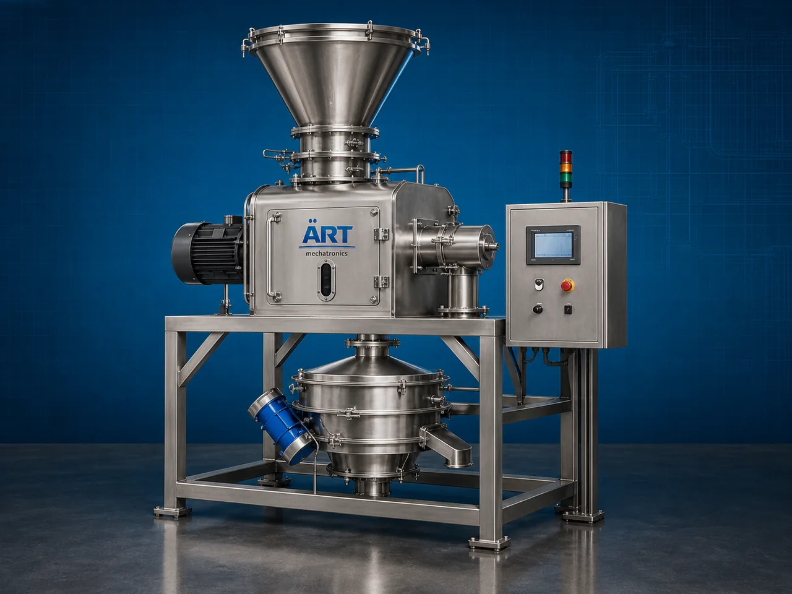

Cutter with Sifter Machine (Industrial Cutting & Sieving System)
A Cutter with Sifter Machine, also known as a Cutting & Sieving Machine, Cutter Cum Sifter, Industrial Cutting and Screening System, or Integrated Cutter Sifter Machine, is an advanced industrial processing solution designed for cutting, chopping, granulating, size reduction, particle separation, grading, screening, and continuous material processing operations across food processing, spice processing, agro industries, herbal processing, biomass industries, chemical industries, and industrial manufacturing sectors.

About the Cutter With Sifter
Cutter with sifter systems are widely used for:
- Material cutting and granulation
- Particle size separation
- Spice and herb processing
- Food ingredient sizing
- Agro product screening
- Powder and granule grading
- Biomass processing
- Continuous industrial material processing
The machine improves:
- Product size uniformity
- Production efficiency
- Material separation accuracy
- Processing consistency
- Labor reduction
- Industrial hygiene
- Automation productivity
Industrial cutter with sifter machines use:
- Heavy-duty cutting blade systems
- Vibratory or rotary sifting mechanisms
- PLC and HMI automation controls
- Precision screening meshes
- Conveyor synchronized handling systems
to automatically cut and separate materials with superior consistency and high production efficiency.
Cutter with sifter machines are widely used in industries such as:
Food processing industries Spice processing industries Agro industries Herbal industries Chemical industries Biomass industries Nutraceutical industries FMCG industries
where accurate particle sizing, continuous processing, and high-speed production are essential.
The machine is highly suitable for:
- Spice cutting and grading
- Herb processing operations
- Food ingredient sizing
- Powder and granule separation
- Agro material processing
- Industrial screening applications
ART Mechatronics offers high-performance cutter with sifter machines, engineered for continuous industrial operation, precision cutting and screening performance, hygienic processing, and reliable long-term industrial productivity.
Working Principle of Cutter With Sifter Machine
- 1. Material Feeding & Loading Raw materials are automatically fed into cutting chamber for processing operation.
- 2. Material Cutting & Size Reduction Process Machine automatically cuts, chops, or granulates materials into smaller particles before sieving operation.
Precision synchronization ensures uniform cutting and smooth material flow.
- 3. Cutting & Screening Operation Machine handles processing of: ✔ Spices ✔ Herbs ✔ Food ingredients ✔ Agro products ✔ Biomass materials ✔ Powders ✔ Granules ✔ Industrial materials
accurately and continuously.
- 4. Sifting & Particle Separation Process Machine performs: Particle grading Size separation Oversize rejection Powder screening Granule classification Fine material separation
for efficient industrial material processing operations.
- 5. Intelligent Automation & Hygiene Integration Optional systems include: Dust extraction systems Automatic feeding systems Vibration control systems Food-grade stainless steel construction Safety guarding systems
- 6. Finished Product Discharge Processed materials discharged automatically for: Packaging operations Mixing processes Drying systems Warehouse storage Export shipment handling
Types of Cutter With Sifter Machines
- 1. Spice Cutter with Sifter Machine Designed for: ✔ Spice cutting and grading applications
- 2. Herb & Agro Processing Cutter Sifter Suitable for: ✔ Herbal and agricultural material processing systems
- 3. Food Ingredient Cutting & Screening Machine Uses: ✔ Food processing and ingredient sizing operations
- 4. Powder & Granule Sifting Cutter Machine Designed for: ✔ Powder processing and particle separation systems
- 5. Servo Driven Cutter with Sifter Machine Suitable for: ✔ Precision industrial processing operations
- 6. Fully Automatic Cutting & Screening System Designed for: ✔ Complete industrial processing automation lines
Industries Using Cutter With Sifter Machines
🌶️ Spice Processing Industry Turmeric, chilli, coriander, herbs, and spice grading systems. 🍅 Food Processing Industry Food ingredients, dehydrated vegetables, and industrial food sizing systems. 🌾 Agro Industry Seeds, biomass, herbal products, and agricultural material processing systems. ⚗️ Chemical Industry Industrial powders, granules, and particle separation operations. 💊 Nutraceutical Industry Herbal powders, supplement ingredients, and screening systems. 🛒 FMCG Industry Food ingredients and industrial processing systems.
Features & Advantages
- High-speed automatic cutting and sifting operation
- Accurate particle sizing and material separation systems
- Hygienic stainless steel industrial construction
- PLC and automation control systems
- Improves production efficiency and processing consistency
- Reduces manual processing dependency
- Supports multiple industrial materials and products
- Reliable long-term industrial performance
- Smooth integration with industrial production lines
Technical Highlights
Machine Type: Cutter with sifter machine Industrial cutting and screening system Material sizing machine Material Compatibility: Spices Herbs Food ingredients Powders Granules Agro products Industrial materials Integration: Cutting blade systems Vibratory sifting systems Automatic feeding systems Dust extraction systems Features: PLC control system Touchscreen HMI Stainless steel construction Precision screening meshes Continuous duty operation Applications: Material cutting Particle grading Powder screening Food ingredient sizing Industrial material separation Agro product processing Automation: Semi-automatic Fully automatic industrial systems
Turnkey Cutting & Sifting Solutions
ART Mechatronics offers: Complete cutting and screening systems Automatic material sizing solutions Industrial processing automation systems Dust handling integration systems Installation & commissioning After-sales service & AMC
Why Choose Art Mechatronics
Expertise in industrial processing and automation systems Customized cutting and sifting solutions for multiple industries High-performance and hygienic processing technology Advanced PLC and automation systems Proven industrial processing performance across sectors
Applications
Spice Processing Plants Food Manufacturing Facilities Agro Product Processing Units Chemical Processing Industries Nutraceutical Manufacturing Plants Industrial Manufacturing Industries
Related Process Equipment machines
Get pricing & specs for the Cutter With Sifter
Share the product, target capacity, current process and plant location. These details help our engineers discuss the right machine or line configuration.
One partner, from design to start-up
ART Mechatronics designs, manufactures, installs and commissions your Cutter With Sifter solution with regional presence in India, UAE and Thailand.